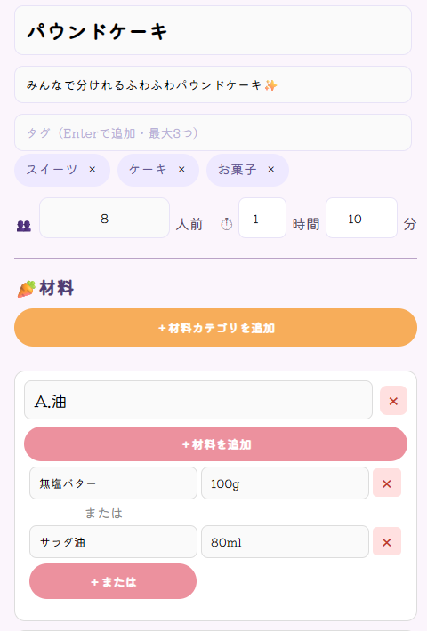

⚠使用していただく上での注意
当サイトはクラウドサービスにてデータを保存しております。
そのため、共有データがクラウドの容量制限に達した場合共有サービスが使用できなくなる恐れがありますのでご了承ください。
また、現在レシピの共有はブラウザごとに30件まで可能です。
それ以上共有したい場合は月額プランに加入していただく必要があります。
※月額プランは今後実装予定
このサイトについて
れぴこ(Repico)は、レシピを保存・整理できるシンプルだけど痒い所に手が届くレシピ管理アプリです。
他の人が投稿したレシピの一覧ページは実装せず、あなたが保存したレシピだけを確認できます。
製作者：眠夢-ﾈﾑ- X(旧Twitter) Bluesky
ご要望・不具合報告等はこちら → マシュマロ
このサイトを広めていただけると嬉しいです！
🍕 使い方 🌭
①アプリ化
れぴこをWebアプリ化しましょう！
当サイトはPWAを採用しています。
共有をタップし、「ホーム画面に追加」を選択
追加をタップすれば、ホーム画面からいつでもれぴこが開けますよ♪
②レシピ作成
あなただけのレシピを作成しましょう！
画面上部の＋をタップするとレシピ作成画面になります。
そこで料理名や調理時間、材料などを書いて保存すればレシピ完成です♪
3つまで追加できるタグを使えば、トップ画面でレシピの検索がしやすくなりますので、ぜひご活用ください！
「または」ボタンを使えば、「この材料はどちらを使ってもいいけど、分量がそれぞれ違う…」という場合にも対応できますよ✨
例↓

③レシピ閲覧
作ったレシピを確認してみましょう！
右上のボタンからはレシピの編集・削除ができます。
ページ下にある共有ボタンからは、作ったレシピを他人に共有し保存してもらうことができます！
あなたのとっておきのレシピを世界に広めましょう✨
今はレシピ30件まで共有できますよ！